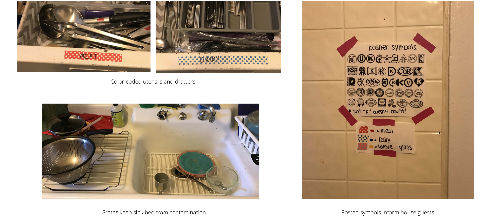

Click 'n Cook
Role
Product Designer
Date
Spring, 2018
Skills
Product Management, Design Thinking
About
Click 'n Cook is a travel-friendly cooking utensil set that I designed for a client who had trouble keeping Kosher while traveling. During this ten week project, my team worked closely with Orthodox Jewish families, students, and Rabbis in the Chicago area to design a product that could help making Kosher traveling less stressful. In my role on this project, I learned rapid prototyping and sketching, conducted phone interviews and home visits, analyzed survey data, and managed tasks for my team.
How might we make traveling easier for people who keep Kosher?
Designated drawers and sinks make separating meat and dairy kitchenware to keep Kosher at home very methodical. The uncertainty of the organization and cleanliness of rental kitchens makes traveling Kosher much more difficult.
Interviewing Rabbis and Orthodox Families on Kashrut Laws
We observed kosher kitchens on Northwestern University's campus, visited homes and interviewed various Chicagoland area Orthodox Jewish families, conducted phone interviews with rabbis and other individuals involved with Jewish organizations in Chicago, and surveyed more than 200 congregants of various synagogues in the Chicagoland area
Photos from home visits
Goal: Design a product that is lightweight and travel friendly which assists kosher-keeping while in foreign kitchens.
Portability: The product must be lightweight, fit in carry-on luggage with ease, and pass all TSA travel regulations.
Ease of use: The handle-head joint must be intuitive and should not interfere with use. Utensils should be color coded.
Kitchen safety: The product must be built with kitchen safe materials as to not contaminate the user’s meal with toxins.
Adherence to Kashrut: All materials used must be nonporous, and maintain structural integrity under boiling water or high heat.
Prototyping
Initial sketches

Intermediate sketches

Final sketches

Final Product
The final design features a color coded universal handle which attaches to various utensil heads with a magnetic snap-in joint. This universal handle allows for a more compact fit in suitcases, while its lightweight kitchen-safe material minimizes added baggage weight without compromising on function.